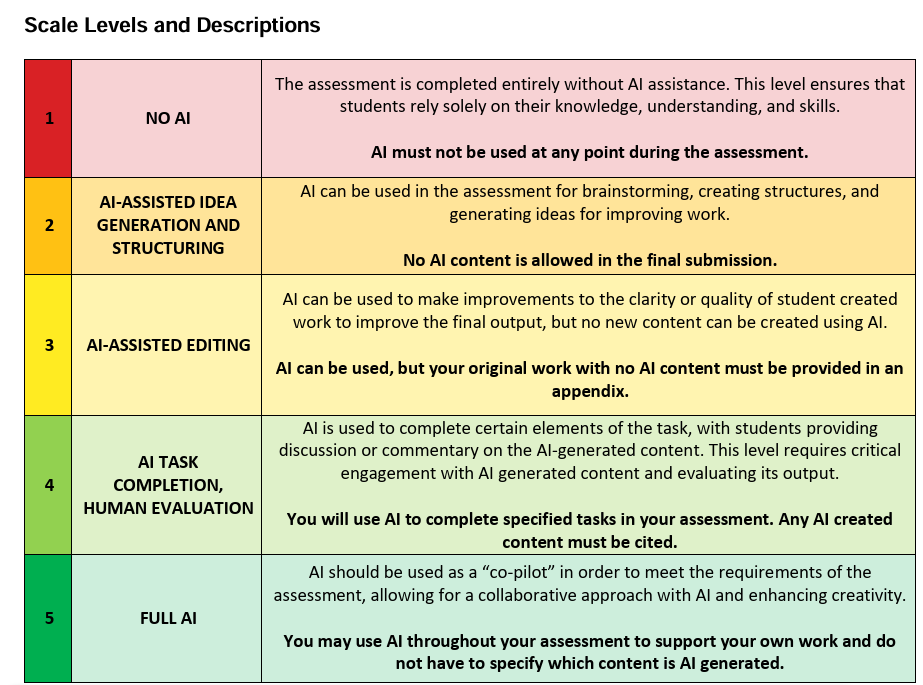

Delta Global School: Education Technology Specialist
The position of education technology specialist came about becasue of the initiative I showed in pushing for improvments to the school IT infrastructure. Most notably I was member of the AI professional learning community which implemented the school's AI policy in part based off of the work of Mike Perkins and his AI assessment scale. I will be the head of the PLC in fall 2025. In the course of the year I found the need to improve the school's learning platform Toddle, brought in new digital resources like Noodletools, and convinced the school to adoubt Lenovo's Lanschool studnet monitoring software. I brought together school managment, the IT department and Lenovo together to implement the software which I will train teachers on use in the fall of 2025. I will aslo be taking over running Toddle and liasoning with the Toddle team as well as taking over leadership of the AI professional learning community. AS the school expands the role will expand as well eventually turning into the Director of Educational Technology position.
- Developing and implementing AI policy
- AI professional learning community
- Implementing Noodletools, LanSchool and ToddleAI
- Training teachers on new technology
- Working with IT department and outside companies to improve school IT infrastructure
- Managing Data and research to improve school functioning and results
This position is a natural progression from my previous role at Delta Global School, where I demonstrated my commitment to improving educational technology and supporting teachers in their use of digital tools. I am excited to continue this work and help shape the future of education at DGS.